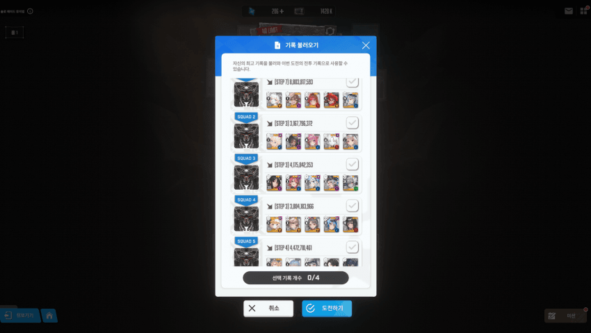
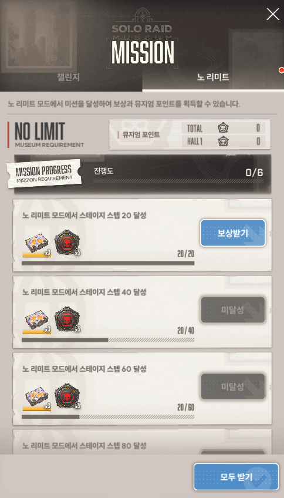
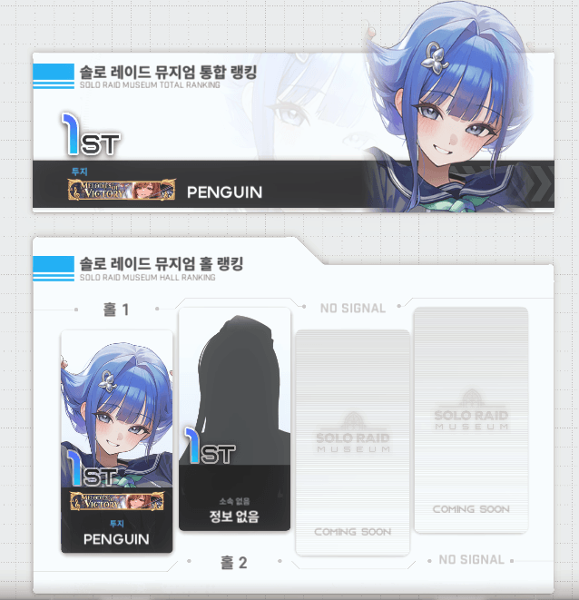
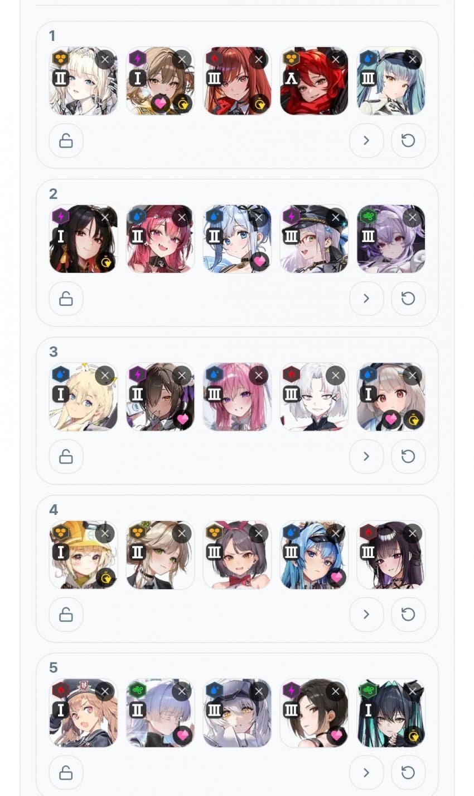

드디어 우리 방주에도 뮤지엄 랭킹에 초상화가 들어왔우
각 덱이 거의 아슬아슬하게 다음스탭을 딱 치고 리타이어 혹은 시간종료된게 고무적이고
사실 기다렸다 강화주간때 쳤으면 그냥 깼대.

덱은 이렇게
채용해볼까 했던건 깡통민트랑 스블애들정도 but 아무도안넣음
이번 솔레랑 달리 그냥 강한애 선버함
특이할게 없는 덱부터 소개함
1) 샷덱
수로시만 살리면 됨 솔린버스트 한번인가 두번 씀
나가있어서 어렵진않음
2) 목마앵네리덱
목단이 있어서 크라운덱 다음으로 난이도 낮음.
사실 이덱에서 어찌어찌 4단을 뽑아준다면 난이도가 훨씬 쉬워질듯함 3억인가 차이로 못했어 강화주간 들어오면 쉬울듯
3) 아크라레프덱
여기부턴 우코딜러가 들어가니까 딜러 스펙을 쓰겠음
라피 101010 sr15 우90 공43 장탄96 크확 2.3
레후 777 sr5 우35 공11 장탄104 차속 2.57 크댐 24
레후를 사실 키울타이밍이 나같은 니아가기준 별로없음
건드리기도싫어서 사실상 쌀먹이지만 접대라 딜은 괜찮았음
키워둔애들은 여기서 8단을 목표로 해보는것도 괜찮을듯
나는 7단 딱코로 찍음
4) 리타 바이드 바밀크 헬름 마허라
치사토, 이브, 레이븐 모두 있지만 레이븐 상태가 바밀크보다도 훨 메롱해서
바밀크를 채용하고 토템 goat 마허라를 넣음
실제로 그냥 버스트 딸깍딸깍하고 수동컨 한번도 안한 헬름보다 딜높삼
바이드 777 sr5 우23
리타 777 sr5 우47 공11
바밀크 777 sr5 우60 공11 명11 차속 4.92 방어력 4.77
바밀크도 사실상 쌀먹수준도 안됨
이덱이 두번째로 어려웠는데, 바밀크 특유의 좆같은 조준감이 약간 환장했음
딱히 독뎀사고날일은 없었음 관통벞에 우코붙어서 괜찮았음
선버는 바밀크
5) 애미스화웡
애란다 788
스화 101010 sr15 공16.58 크댐10.56
웡 장탄92.66 공 22.22 크댐 27.98
진짜 제일 어려웠던 덱
어렵다기보단 좀 좆같았던 덱임
스화선버고 첫 따발총이 웡한테 갈만큼 스화공이 낮은편이기도함
다른게 어려운게 아니라 얘네를 살려서 두번째 족자까지 가는게 너무 스트레스임
애미 장전해대지 오토웡은 쏘고 잠깐 몸 뒤로갈때 전체공격 피해서 엄폐물 까져버리지
딜은 넘치는데 그 딜을 가는 타임어택이 중요함
그리고 첫 족자 들어가기전에 스화풀차지 한대 맞추고 나오면서 또 코어 히트해서 독주머니를 깨줘야함
애미버프 받은 스화기준 코어두대치면 다깨지거나 내 애미가 788이라 그런가 실피로 남긴함 바로 웡톡톡이하고 깨주면 독주머니 독 한번 쳐맞거나 안맞거나함
두번째 독주머니부턴 좀 쳐맞는각 나와서 피관리가 어질어질할 수 있는데 이쯤이 딱 4단 분기점이라 여기서 나도 셋 죽었는데 4단찍고 끝
스블, 치사토, 타키나, 민프없이
강화주간없이
400전에 쌀먹으로도 가능하니 한번 트라이해서 방주 랭킹먹어봅시다
어제 무지성으로 코더딱코되자마자 395업안했으면
394로 최저클 경신인데 동점인건 조금 아쉽삼